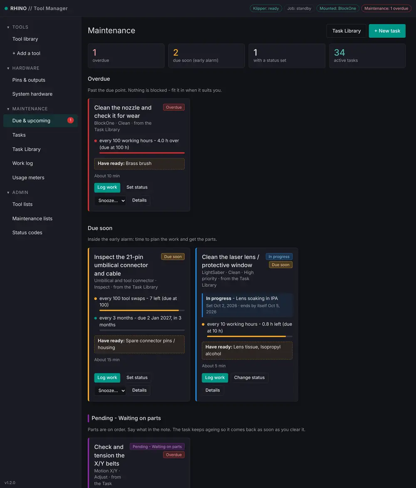
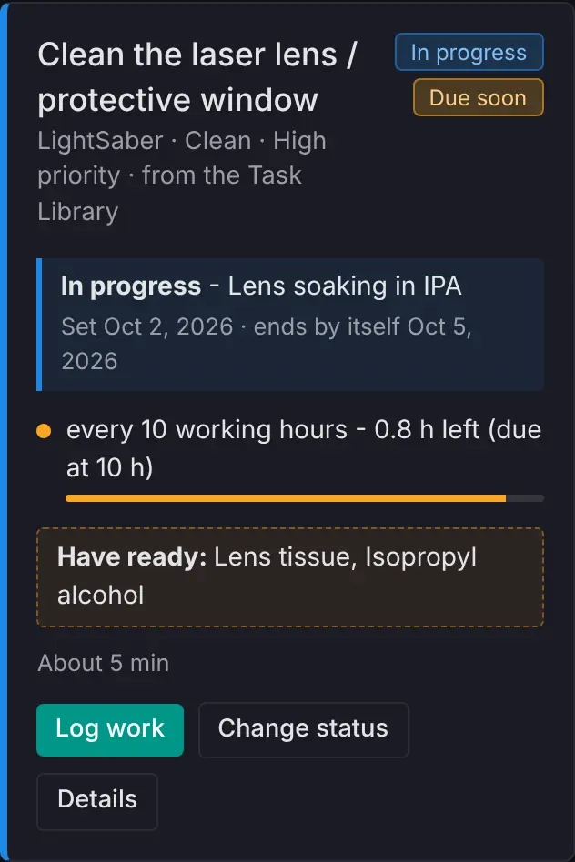
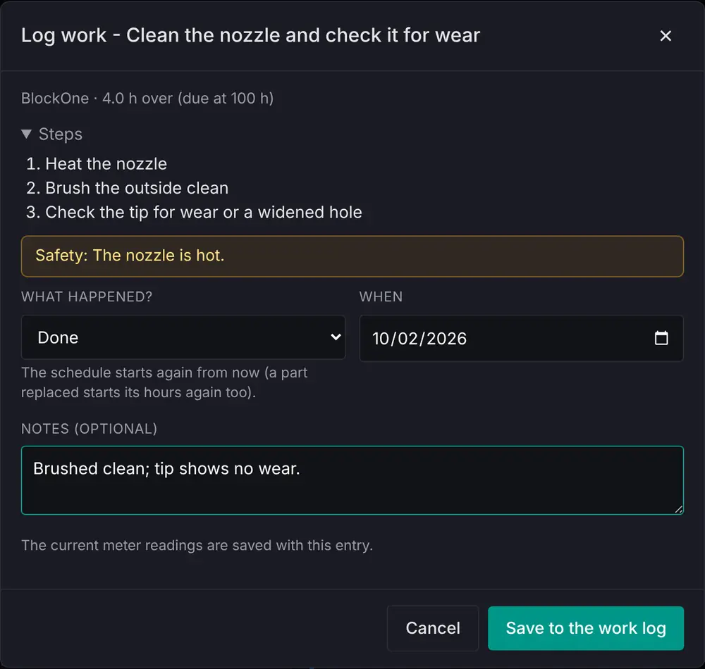
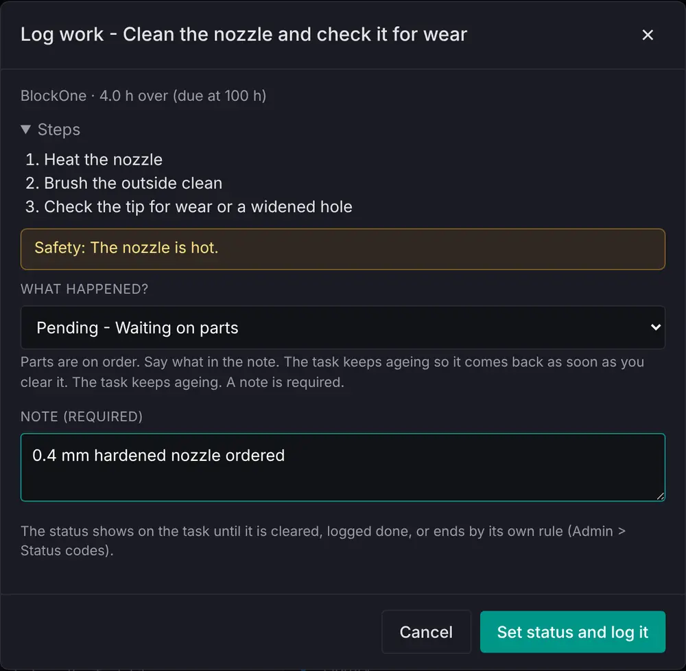
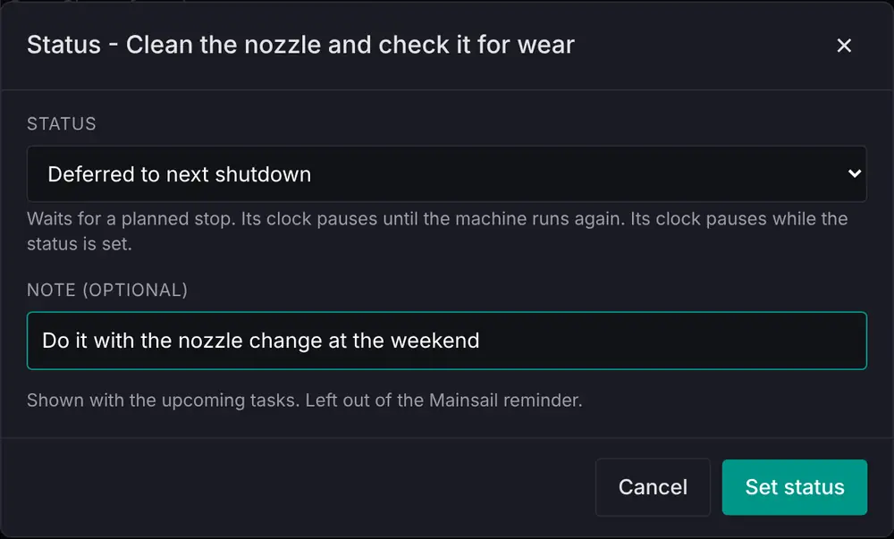
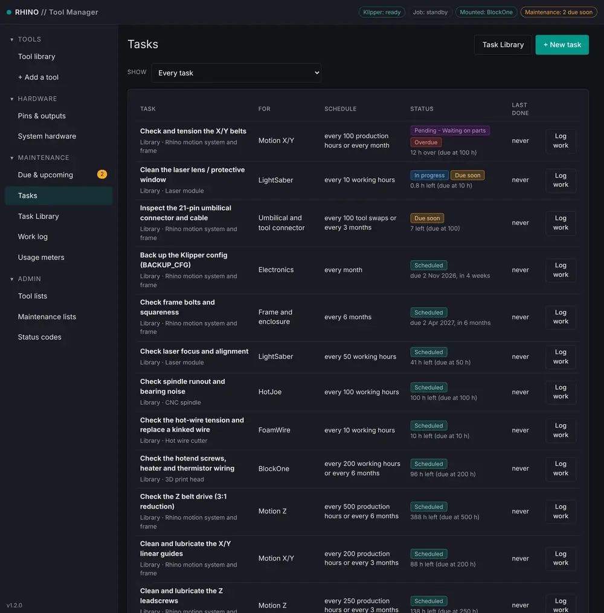
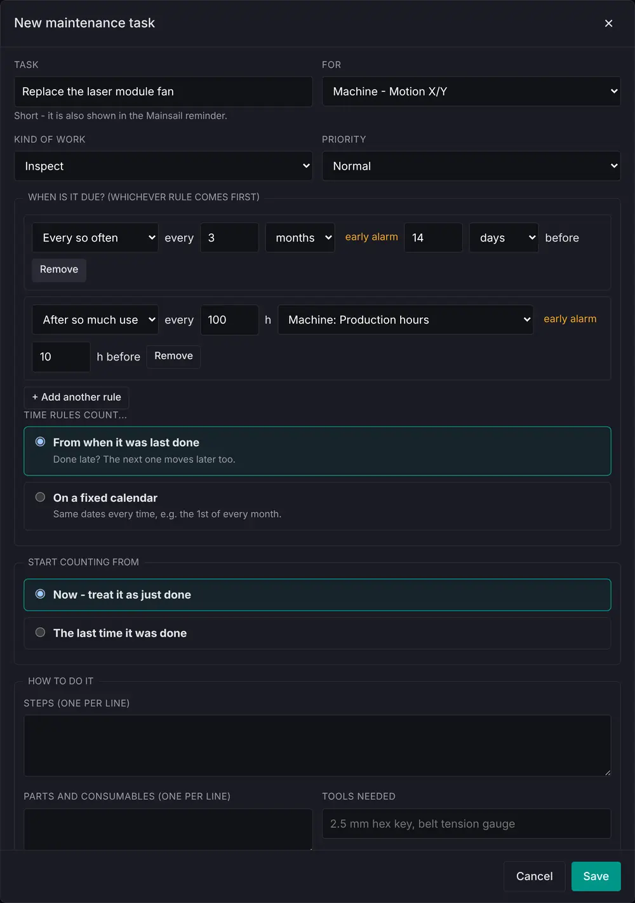
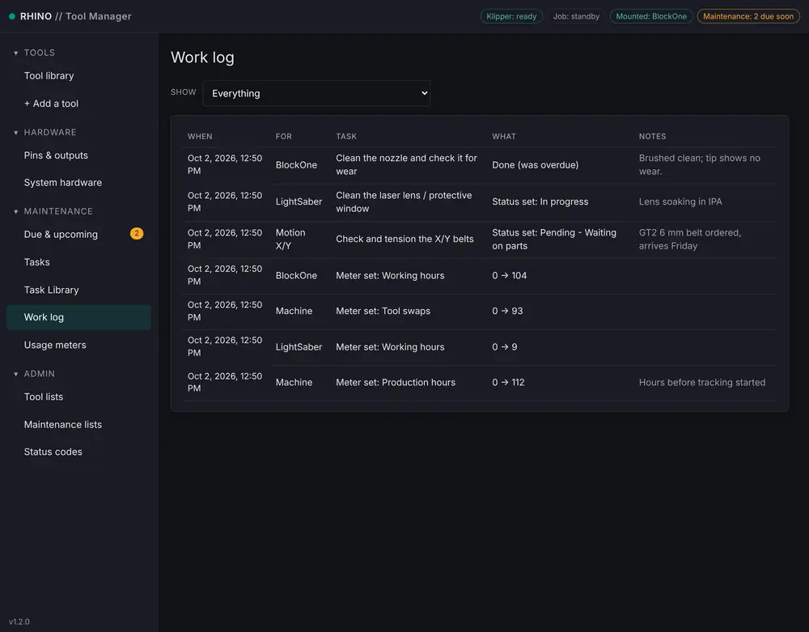
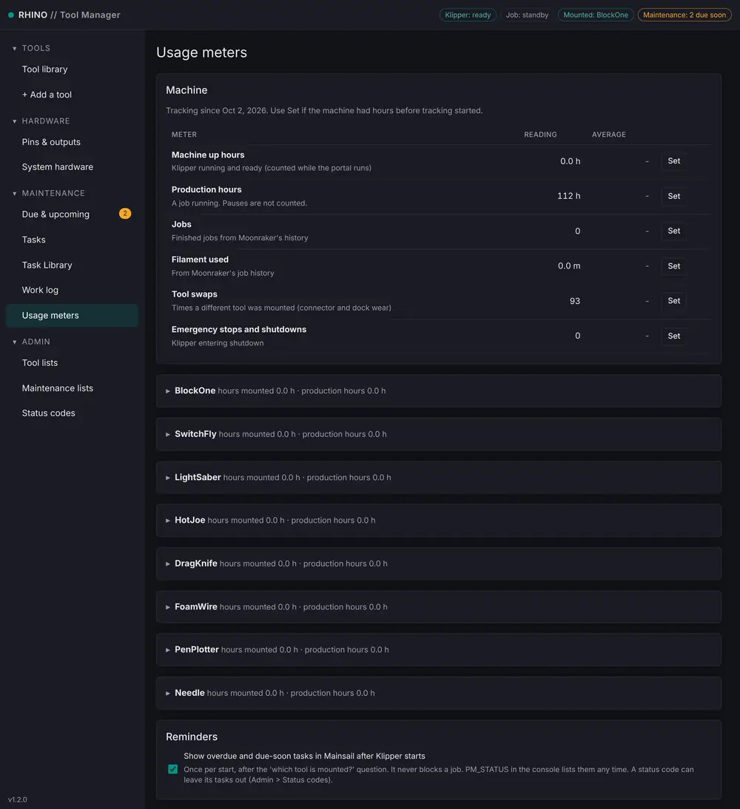

The portal keeps track of preventive maintenance for the machine, every tool and the system hardware. It tells you what is overdue, what is coming up and what parts to have ready. It never blocks a job, a swap or a command. Open it from Maintenance in the sidebar: Due & upcoming, Tasks, Task Library, Work log and Usage meters.
Open the Task Library and assign a Task Book to the whole machine and to each tool: Rhino motion system and frame on the machine, 3D print head on BlockOne and SwitchFly, Laser module on LightSaber, and so on. The intervals are starting points; tune them to how your machine wears (see Task Library and Task Books). When you add a tool, the confirmation offers the book that fits it.
Tasks are grouped by status. The tiles at the top count them. Each card shows every rule with a progress bar, how far off it is, and an estimate in days at your usual rate of use. Once the early alarm goes off, the card lists the parts to Have ready.

| Group | Meaning |
|---|---|
| Overdue | Past the due point |
| Due soon | Inside the early alarm: time to plan the work and order parts |
| A status code's own group | Tasks set to a status shown in its own group, such as Pending – Waiting on parts |
| Snoozed | Put off on purpose |
| Coming up | The next eight tasks by how close they are to due, plus tasks set to a status shown with the upcoming ones |
Log work records what happened. Set status puts a status code on the task. Snooze puts an overdue or due-soon task off for 1 day to 2 weeks. Details opens the task. The sidebar badge and a chip in the top bar show the count: red for overdue, amber for due soon.
A card with a status code set shows it at the top in its colour, with the note, when it was set and when it ends by itself. Here In progress ends after three days; the task is still due soon underneath.

Log work shows the task's steps and safety notes. What happened? is a list: Done; Skipped – not needed this time if you checked and nothing needed doing; or one of your status codes. Done and Skipped start the schedule again from here, and so do a part's hours, so a new nozzle starts at zero. You can backdate the entry and add notes; the current meter readings are saved with it.

Choosing a status code instead sets that status on the task and logs it. The help line says what the status does; Pending – Waiting on parts needs a note saying what is on order.

Set status on a card does the same without the steps, and Clear the status takes it off again.

Every task in one table, sorted overdue first, with its status code and status. Library tasks show Library and the Task Book they came from. Show filters it: overdue and due soon, with a status set, one machine area, one tool or piece of system hardware, or archived. Choosing an area or a tool also shows its usage meters.

+ New task opens the task editor:

| Rule | Example | Early alarm |
|---|---|---|
| Every so often | every 3 months | 14 days before |
| After so much use | every 100 working hours of this tool | 10 h before |
| After each event | after each emergency stop or Klipper shutdown | due straight away |
| Once, on a date | 1 Dec 2026 | 7 days before |
Time rules count from when the task was last done, so doing it late moves the next one later. Choose On a fixed calendar to keep the same dates every time, such as the 1st of every month. A usage rule's early alarm is in the meter's own unit; leave it empty for 10% of the interval. Events are a tool swap, this tool being mounted, a job, and an emergency stop or shutdown. Add this task to the Task Library, at the bottom of an existing task, turns it into a library task and links it.
Every entry, newest first: work done or skipped, status codes set and cleared, and meter changes. Filter it by machine area, tool or system hardware.

Usage rules count these meters. The portal reads them from Moonraker every few seconds and from Moonraker's job history.

| Meter | Machine | Each tool | Counts |
|---|---|---|---|
| Machine up hours | yes | – | Klipper running and ready |
| Production hours | yes | yes | A job running. Pauses are not counted. |
| Hours mounted | – | yes | The tool on the machine while Klipper is up |
| Working hours | – | yes | Print heads: nozzle heater on. LightSaber: laser on. HotJoe: spindle running. Added powered tools: output on. Passive tools and DragKnife: running a job. |
| Jobs | yes | yes | Finished jobs, from the job history |
| Filament used | yes | print heads | From the job history |
| Tool swaps / Times mounted | yes | yes | A different tool mounted. A restart is not a swap. |
| Emergency stops and shutdowns | yes | – | Klipper entering shutdown |
The first time the portal runs, it imports the jobs already in Moonraker's history as the machine's starting reading. If the machine had hours before that, press Set on a meter and note why; the change goes in the work log. Jobs that ran while the portal was stopped are filled in from the history the next time it starts. System hardware tasks count the machine's meters. The page also has the start-up reminder switch.
After Klipper starts, once you answer which toolhead is mounted?, Klipper asks a Maintenance due question, shown on Control in Studio (and in Mainsail), with up to eight overdue and due-soon tasks, overdue first. It appears once per start; close it with OK. Snoozed tasks, tasks with the reminder unticked and tasks set to a status code that leaves them out of the reminder are not shown.
The portal keeps myrhino/maintenance_status.cfg up to date, and Klipper reads it when it starts. At any other time, type PM_STATUS in the console for the live list, or PM_REMINDER to show the start-up pop-up again. Renaming a tool moves its tasks and meters with it. Removing a tool or a piece of system hardware archives its tasks (filter Archived) and keeps their work-log entries.